Geplande groepen
in Onderwijsvraag
portal Onderwijs > Geplande groepen
(zie ook: Groepen plannen)
Het plannen van de groepen is een belangrijk onderdeel van de formatie en de roostervoorbereiding voor de roostermaker. Tijdens het formatieproces kijkt u regelmatig naar de onderwijsvraag voor volgend schooljaar. Elk vak dat op een afdeling voorkomt, vormt in het overzicht bij de geplande groepen één regel. Het aantal (prognostische) leerlingen dat het vak in het vakkenpakket heeft en de maximale groepsgrootte bepalen het verwacht aantal groepen.
Warning
Het portal berekent het verwacht aantal groepen. Het is aan u om hiervan de daadwerkelijk geplande groepen te maken.
Op deze pagina laten wij u zien hoe u:
- Eenvoudig een geplande groep toevoegt of verwijdert.
- Algemene instellingen voor alle vakken instelt. Denk bijvoorbeeld aan de sectie, het vaktype, het verwacht aantal docenten en de lesvraag.
- Aanvullende kenmerken van keuzevakken aanpast. Denk bijvoorbeeld aan de berekening van het verwacht aantal leerlingen, uitsluiting van pakketdelen en aangepaste maximale groepsgrootte.
Zichtbare velden: standaard of leerlingtelling
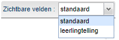
U heeft de mogelijkheid om te kiezen tussen twee opties voor de kolommen die u ziet:
- Standaard. Hier stelt u de sectie en het vaktype in en ziet u ook het verwacht aantal leerlingen terug. Daarnaast past u hier het verwacht aantal groepen aan en stelt u per tijdvak in of een vak een keuzeles heeft.
- Leerlingtelling. Hier bepaalt u welke manier van leerlingtelling u gebruikt en stelt u in welke pakketdelen standaard als zelfstudievak meetellen. Als u werkt met een LWOO-indicatie ziet u dit hier terug in de kolom Lln corr.
Instellingen vakken
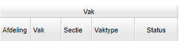
In het paneel Vak ziet u een aantal kolommen voor verschillende instellingen. De Sectie en het Vaktype kunt u hier aanpassen.
Toekennen van secties
U kent een sectie toe aan een vak op een afdeling door dubbel te klikken in de kolom Sectie. Vervolgens kiest u de gewenste sectie.
Warning
Het toekennen van een sectie aan een vak op een afdeling is noodzakelijk om bij Management > Formatie-inzicht > Inzetbalans een complete inzetbalans te zien.
Verschillende vaktypes
In het portal onderscheiden we drie verschillende vaktypes. Door dubbel te klikken onder de kolomkop Vaktype wijzigt u eventueel het vaktype.
- Klassikaal. Alle leerlingen op een afdeling volgen dit vak in een stamklas. De afdelingsinstellingen worden gebruikt voor de geplande groep.
- Keuze. Alleen leerlingen die dit vak in hun keuzepakket hebben volgen dit vak. Dit doen ze in een lesgroep specifiek voor deze afdeling en dit vak.
- Afdeling. Met dit vaktype stelt u optionele lessen (keuzelessen) in voor een afdeling, die horen bij een specifiek keuzeles-vak. Dit is bijvoorbeeld iets als studiewerktijd zijn. Het is een vak wat de leerlingen niet in hun pakket hebben, maar waarvoor wel een optionele les in hun rooster staat. Voor dit vaktype plant u alleen afdelingskeuzelessen en maakt u geen groepen aan. Afdelingskeuzelessen hebben in de naamgeving het woord afdeling.
Sectie en vaktype aanpassen via bulkwijziging
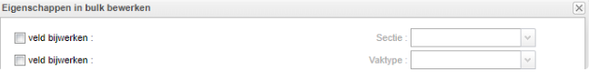
Om in één keer meerdere aanpassingen te doen volgt u de volgende stappen:
- Filter op Afdeling en/of Vak.
- Selecteer één regel door er op te klikken.
- Selecteer meerdere regels met Ctrl + klik, Shift + klik of CTRL + A.
- Klik op de knop
. - Plaats een vinkje bij het veld bijwerken.
- Selecteer de juiste Sectie en/of het juiste Vaktype.
- Klik op de knop
.
Status
In de kolom Status ziet u of het verwacht aantal groepen overeenkomt met het aantal geplande groepen.
image.png
Het aantal verwachte groepen komt overeen met het aantal geplande groepen.
Er zijn meer groepen gepland dan verwacht.
Er zijn minder groepen gepland dan verwacht.
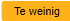
Instellingen leerlingen
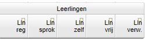
In het paneel Leerlingen ziet u verschillende kolommen met informatie over het verwacht aantal leerlingen. Dit is zowel het totaal aantal leerlingen als leerlingen met verschillende betrokkenheid. Bij Leerlingen > Pakketkeuze > Keuzepakketten ziet u de betrokkenheid bij het vak per leerling terug. De roostermaker of decaan stelt hier een eventuele andere betrokkenheid in.
Een leerling volgt een vak wanneer deze in het pakket zit. Dit aantal is terug te zien in de kolom Lln reg. Door de betrokkenheid te veranderen stelt u in dat de leerling slechts een deel van de lessen verplicht volgt. In het portal zijn er drie verschillende vormen van betrokkenheid.
- Sprokkelen: de leerling moet zoveel mogelijk lessen kunnen volgen, telt mee voor het verwacht aantal leerlingen en dus het aantal geplande groepen. Het aantal sprokkelleerlingen is te zien onder de kolomkop Lln sprok.
- Zelfstudie: de leerling hoeft de lessen in principe niet te volgen en telt niet mee voor het verwacht aantal leerlingen. Deze betrokkenheid heeft geen invloed op het aantal geplande groepen. Het aantal zelfstudieleerlingen is te zien in de kolom Lln zelf.
- Vrijstelling: de leerling volgt dit vak en de lessen niet. De leerling telt niet mee voor het verwacht aantal leerlingen en het aantal geplande groepen. Het aantal leerlingen met een vrijstelling is te zien in de kolom Lln vrij.
Het verwacht aantal leerlingen is te zien onder de kolomkop Lln verw. Dit is het regulier verwacht aantal leerlingen gecombineerd met het aantal leerlingen met de betrokkenheid sprokkelen.
Peilweek verwacht aantal leerlingen

Bij de pakketkeuze bestaat de mogelijkheid om een wijziging door te voeren vanaf een bepaalde week. Daarom bestaat ook de mogelijkheid om bij de geplande groepen het verwacht aantal leerlingen voor een bepaalde week te berekenen.
Rekenmethode voor verwacht aantal leerlingen
Note
Advies voor de telling is pakket + afd%
Ons advies voor de rekenmethode is pakket + afd%. Zolang er nog leerlingen geen pakket gekozen hebben, wordt er geteld met een percentage. Dat percentage kan handmatig ingevoerd worden of voorspelt worden op basis van de pakketkeuzes van vorig jaar.
Om de rekenmethode aan te passen, wisselt u rechtsbovenin naar Zichtbare velden: leerlingtelling. In de kolom Telling lln kiest u welke rekenmethode u gebruikt. U kunt alleen bij keuzevakken een methode selecteren. Als het vak klassikaal is heeft immers elke leerling op de afdeling het vak in het pakket.
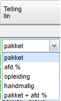
U heeft verschillende mogelijkheden om het aantal leerlingen te berekenen. Het verwacht aantal leerlingen vormt de basis voor het verwacht aantal groepen.
- Pakket: de leerlingen die een afdelingsdeelname hebben voor de betreffende afdeling én het vak in het pakket hebben, tellen hier mee. De prognose bepaalt voor welk percentage een leerling meetelt in het verwacht aantal leerlingen.
- Afd. %: deze methode gebruikt u wanneer leerlingen nog geen pakketkeuze gemaakt hebben. Zo krijgt u in een vroeg stadium een idee van het verwachte aantal groepen. Bij deze methode berekenen we het verwachte aantal leerlingen bij een vak door de afdelingsprognose (%) te combineren met het verwachte aantal leerlingen (%) dat het vak kiest. U vult zelf het percentage in voor het verwacht aantal leerlingen dat het vak kiest in de kolom Afd. %. U doet dit op basis van het percentage van vorig schooljaar. Klik hiervoor op de knop
en vervolgens op de knop . Of u doet dit handmatig door dubbel te klikken in de kolom Afd. % en het gewenste getal in te vullen.
Note
Voorbeeld: de helft van de leerlingen in vwo4 kiest elk jaar voor het vak aardrijkskunde. De vakkenpakketten zijn nog niet bekend. U wilt het aantal geplande groepen voor aardrijkskunde in vwo4 wel al bepalen. De leerling prognoses zijn al ingevuld. Kies voor de rekenmethode afd. % en vul in de kolom Afd. % 50% in. Elke afdelingsdeelname telt voor 50% mee voor de verwachte groepsgrootte voor het vak aardrijkskunde in vwo4. Verwacht u in totaal 104,8 leerlingen dan gaat het portal uit van 52,4 leerlingen met aardrijkskunde.
- Opleiding: deze methode telt het percentage per opleiding. Als u werkt met opleidingen om binnen één afdeling onderscheid te maken tussen verschillende niveaus wilt u wellicht de leerlingen tellen per opleiding doen. In de kolom Opleiding dient u de betreffende opleiding te kiezen.
- Handmatig: het verwacht aantal leerlingen kunt u ook handmatig invullen. Selecteer in de kolom Telling lln handmatig en vul door dubbel te klikken het gewenste aantal in onder de kolomkop Lln verw.
- Pakket + afd. %: deze methode is een combinatie van pakket en afd. %. Leerlingen die nog geen (volledig) vakkenpakket hebben ingevuld worden op deze manier meegenomen in het verwacht aantal leerlingen. Het portal kent de leerlingen met een onvolledig keuzepakket het Afd. % toe. Hiervoor moet u de kolom Afd. % invullen. De keuze is aan u of u dit handmatig doet of via de knop
. Leerlingen met een volledig keuzepakket worden berekend volgens de pakket rekenmethode.
Rekenmethode aanpassen via bulkwijziging
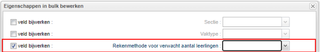
Om in één keer meerdere aanpassingen te doen volgt u de volgende stappen.
- Filter op de gewenste geplande groepen.
- Selecteer één regel door er op te klikken.
- Selecteer meerdere regels met Ctrl + klik, Shift + klik of CTRL + A.
- Klik op de knop
. - Plaats een vinkje bij het veld bijwerken.
- Selecteer de gewenste rekenmethode.
- Klik op de knop
.
Pakketdelen zelfstudie instellen
Om de pakketdelen voor zelfstudie aan te passen, wisselt u rechtsbovenin naar Zichtbare velden: leerlingtelling. In de kolom Pakketdelen zelfstudie kiest u welke pakketdelen u gebruikt. U kunt dit alleen doen bij keuzevakken. Bij Onderwijs > Afdelingen markeert u het pakketdeel als zelfstudievak voor de volledige afdeling. Bij Beheer > Portal-inrichting > Keuzes maakt u pakketdelen aan.
U bepaalt bij Geplande groepen op vakniveau dat leerlingen met een bepaald pakketdeel een zelfstudielabel krijgen bij het keuzepakket. Dit leidt ertoe dat deze leerlingen niet worden meegeteld in het gepland aantal groepen. Het werkt als volgt:
- Zet een vinkje voor de kolom Pakketdelen zelfstudie.
- Dubbelklik in de kolom Pakketdelen zelfstudie en selecteer het pakketdeel dat u uitsluit bij de berekening voor het verwacht aantal leerlingen.
Instellingen groepen
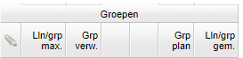
Het aanmaken van de geplande groepen doet u in dit deel van het scherm. Het aantal verwachte (Grp verw) en het daadwerkelijke aantal geplande groepen (Grp plan) ziet u terug onder het paneel Groepen. Bij het Vaktype klassikaal is het verwacht aantal groepen (Grp verw) standaard ingevuld. Dit is gelijk aan het verwacht aantal stamklassen ingevuld of berekend bij de afdelingsinstellingen.
Maximale groepsgrootte
De maximale groepsgrootte (Lln/groep max.) voor alle groepen komt bij de projectinstellingen vandaan. Heeft u de maximale groepsgrootte aangepast bij de afdelingsinstellingen, dan ziet u deze hier ingevuld. Ook kunt u hier per vak op afdeling afwijken van de groepsgrootte. Dit kan alleen bij het vaktype keuze.
- Zet een vinkje onder het potlood voor de kolom Lln/groep max.
- Dubbelklik in de kolom Lln/grp max en pas het getal aan.
Minimale groepsgrootte
U stelt eventueel een drempelwaarde in voor het mimimum verwacht aantal leerlingen voor één groep. Dit betekent dat er een minimum aantal leerlingen het vak in het keuzepakket moet hebben, voordat er een geplande groep wordt berekend in het portal.
De kolom Lln/grp min maakt u zichtbaar door met uw rechtermuisknop in een kolomkop te klikken en Drempelwaarde: minimum verwacht aantal leerlingen voor één groep te selecteren.
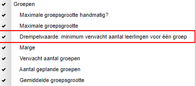
Marge
In deze kolom verschijnt een getal als de marge voor de geplande groepen vijf leerlingen afwijkt, waardoor er een extra groep of juist één groep minder gepland kan worden. De marge is op basis van het verwacht aantal leerlingen (Lln verw) en het verwacht aantal groepen (Grp verw). En dus niet op het daadwerkelijk aantal geplande groepen (Grp plan).

- Bij een positieve marge (+4) kunnen nog vier leerlingen het vak kiezen, voordat er een extra groep aangemaakt moet worden.
- Bij een negatieve marge (-4) kan er een groep afgehaald worden, als vier leerlingen het vak laten vallen.
- De cel kleurt paars wanneer de marge tussen -2 en +2 ligt.
De marge houdt rekening met een eventuele minimale groepsgrootte die u invoert. Als de minimale groepsgrootte vijf is en er worden zeven leerlingen geteld dan is de marge dus twee.
Geplande groepen toevoegen en verwijderen
Met de knop
Groepen naar verwachting via bulkwijziging
- Selecteer één regel door en op te klikken.
- Selecteer meerdere regels met Ctrl + klik, Shift + klik of CTRL + A.
- Klik op de knop
.
Handmatig een groep toevoegen of verwijderen
U wijkt handmatig af van het gepland aantal groepen met de knoppen <+> of <->.
Met deze knop voegt u een extra groep toe.
Met deze knop verwijdert u een geplande groep.
Instellingen lesvraag
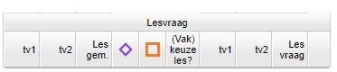
In het paneel Lesvraag ziet u verschillende kolommen met informatie over de lessentabel, een groepsgebonden lessentabel, gekoppelde groepen, vakkeuzelessen, verwacht aantal docenten en de lesvraag. De lesvraag is het gepland aantal groepen maal de lessentabel plus eventuele vakkeuzelessen gewogen met het formatiegewicht van de tijdvakken.
Aangepaste lessentabel voor vak op een afdeling
De standaard lessentabel vult u in bij Onderwijs > Lessentabel. Deze past u hier eventueel handmatig aan door dubbel te klikken op het getal onder de kolomkop voor het betreffende tijdvak.
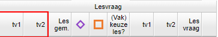
Warning
Let op! Als u de lessentabel hier aanpast dan vindt deze aanpassing ook plaats in de standaard lessentabel. Wilt u alleen een aanpassing doen in dit schooljaar, doe dit dan bij de geplande lessen.
Gekoppelde groepen en groepsgebonden lessentabel
In deze twee kolommen ziet u informatie over gekoppelde groepen of lessen en een groepsgebonden lessentabel.
Waar u dit icoon ziet, zijn er groepen van dit vak op de betreffende afdeling gekoppeld. Koppelingen kunnen afdelingsoverstijgend zijn. Koppelingen stelt u in bij Onderwijs > Geplande lessen.
Waar u dit icoon ziet, zijn er handmatige wijzigingen gemaakt in de lessentabel bij de Onderwijs > Geplande lessen.
(Vak)keuzeles?
Hier plant u (vak)keuzelessen voor geplande groepen. Vakkeuzelessen zijn niet-groepsgebonden lessen. Een leerling met het vak in het keuzepakket op de betreffende afdeling kan deelnemen aan de geplande keuzeles. Vakkeuzelessen hebben in de naamgeving het woord pakketgroep. Bij Onderwijs > Geplande groepen (details) ziet u de geplande vakkeuzelessen terug.
Vakkeuzelessen toevoegen
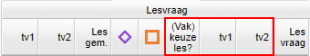
- Zet een vinkje onder de kolomkop (Vak)keuzeles?.
- Dubbelklik in de kolom voor het tijdvak waar u een keuzeles wilt
- Pas het getal aan.
Via de knop
Verwacht aantal docenten
U past soms het verwacht aantal docenten voor een les handmatig aan. De kolom Doc/les maakt u zichtbaar door met uw rechtermuisknop in een kolomkop te klikken en Verwacht aantal docenten handmatig? en Verwacht aantal docenten te selecteren.
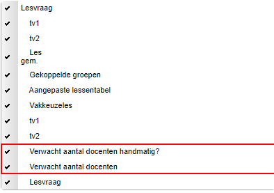
Lesvraag
De lesvraag is het aantal geplande groepen maal de lesentabel maal het aantal docenten per les. Deze wordt ook gewogen met het formatiegewicht van de tijdvakken.
Note
Voorbeeld: het vak natuurkunde in v5 heeft 3 lessen in tijdvak 1 en 2 lessen in tijdvak 2. Er zijn drie geplande groepen. Er is ook één vakkeuzeles gepland in tijdvak 1 en 2. De tijdvakken wegen allemaal even zwaar. Er is 1 docent per les. De lesvraag is 8,5.
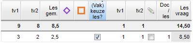
Het verband tussen geplande groepen en roostergroepen
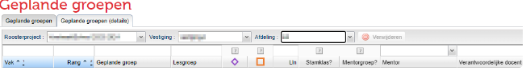
De roostermaker activeert op een gegeven moment de groepen uit de desktop. Vanaf dat moment is er een expliciet verband tussen de geplande groepen in het portal en de roostergroepen in de dekstop. Dit verband ziet u terug bij Onderwijs > Geplande groepen > Geplande groepen (details). De eerste geplande groep in het portal wordt gekoppeld aan de eerste geroosterde groep uit de desktop. Dit verband bewerkt u eventueel handmatig in de kolom Lesgroep in dit scherm.
Volgende pagina: Geplande lessen